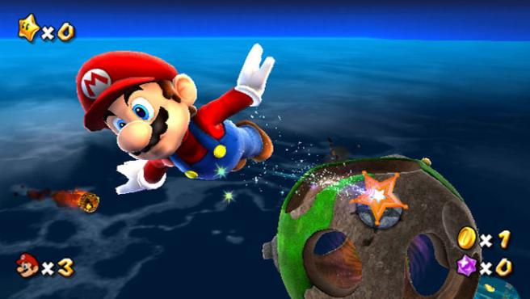

La trama retoma los elementos clásicos que han distinguido a la serie —es decir, en la que los protagonistas intentan salvar a la princesa del malvado Bowser a través de diversos mundos, al mismo tiempo que derrotan a múltiples enemigos que complican la travesía, además de adquirir diversos objetos útiles a lo largo de su aventura, para alcanzar así el objetivo principal—; sin embargo, en esta entrega, el argumento se centra en la búsqueda galáctica que Mario y su hermano Luigi deben emprender para conseguir unos objetos llamados «Power Stars» (traducido como «Superestrellas») los cuales tienen la capacidad de otorgar energía a un artefacto inmenso llamado Planetarium del cometa, que funciona como una nave espacial, y cuyo propósito radica en poder llegar hasta el lugar donde se encuentra Bowser, ya que este tiene cautiva a la Princesa Peach.
 Super Mario Galaxy fue mostrado por primera vez en el evento E3 de 2006, con un sistema básico de gráficos que generaba la representativa física producida por el juego, y que además fue provisto anteriormente en una demostración. Paralelamente a la concepción original del juego a partir de «plataformas esféricas» con gravedad propia, Miyamoto concibió la idea de diseñar un nuevo juego en donde la libertad y la acción presentes en los movimientos estuvieran disponibles en todo momento; esta ocurrencia fue concebida a partir de un hámster que pertenecía a un amigo suyo.9 El videojuego ha sido uno de los más aclamados de todos los tiempos por parte de la crítica, así como por parte de los fanáticos de la serie, y además ha ganado numerosos premios como «Mejor juego del año».